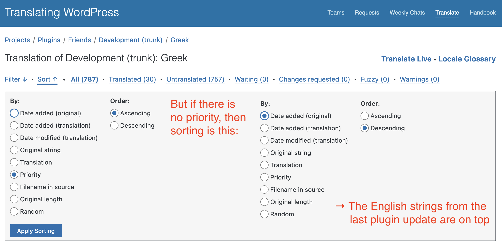

Community Team Training #11
Using Translate Live

Translating WordPress
Polyglots Handbook
Typical Translation Environment
Enter a translation
What am I translating?
What am I translating?
Sorting
Typical Translation Environment
- Translating "somewhere in the middle"
- Missing Context
Translate Live
- Loads a plugin inside your browser
- Inline Translation
Slides
https://alex.kirk.at/translate-live-nov-2023/
| WordPress.org | Matrix |
| akirk | @alex:kirk.at |
Acknowledgements
- Presentation Framework: Reveal.js